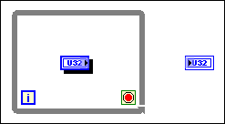
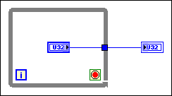

You have attempted to connect a wire to a floating object, which LabVIEW does not allow. You might encounter this error when expanding a structure, such as a while loop, around an object on the block diagram. Floating objects have a shadow around their border that signifies that they are not actually inside the structure, but floating above it.
To correct this error, click and drag the floating object outside of the structure. The shadow disappears and you can drag the object back to its previous position inside the structure.
